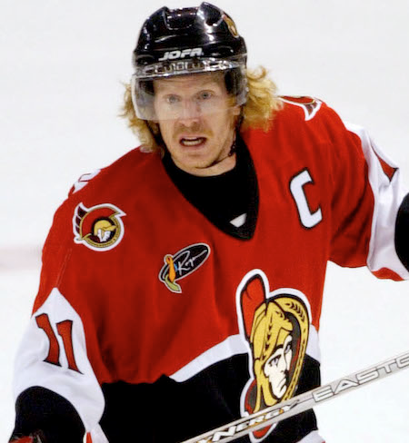
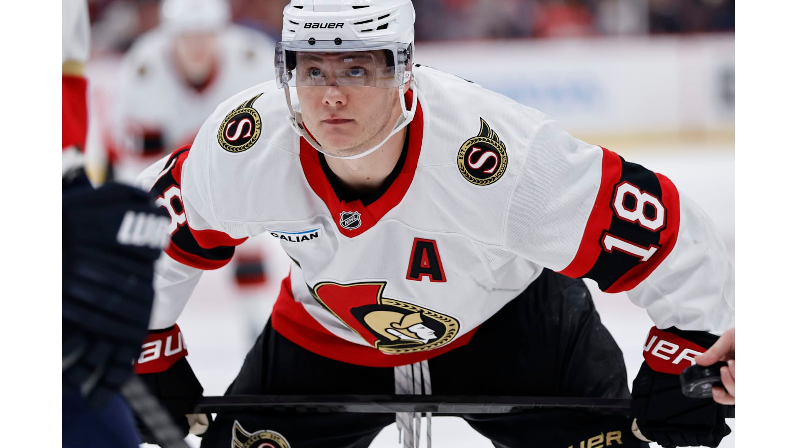
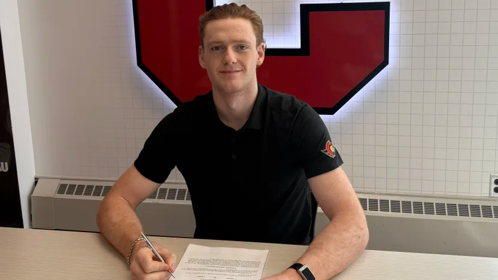
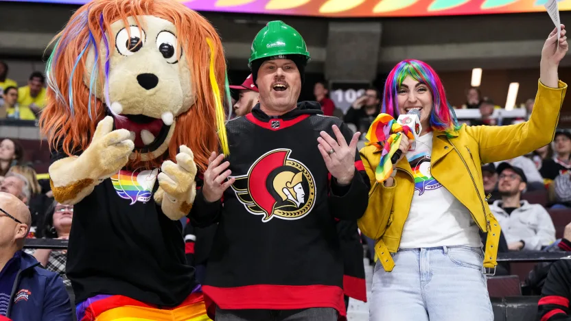

BEM VINDO AO
OTTAWA SENATORS
Ottawa é o berço de uma das primeiras dinastias do hockey, mas a versão moderna dos Senators nasceu em 1992, após uma campanha histórica chamada "Bring Back the Senators". O time é conhecido por suas cores vermelho, preto e dourado, e pelo logotipo do Centurião Romano, simbolizando força e autoridade na capital do Canadá.
Os Sens viveram seu auge nos anos 2000, com a "Pizza Line" (Alfredsson, Spezza e Heatley) aterrorizando as defesas adversárias, culminando na chegada à final da Stanley Cup em 2007. Após alguns anos difíceis, o time reconstruiu sua identidade em torno de um núcleo jovem, barulhento e extremamente físico, que não tem medo de encarar nenhum gigante da liga.
Atualmente, Ottawa é um dos times mais "chatos" (no bom sentido) de se enfrentar. Eles jogam um hockey rápido, com muita presença física e uma profundidade no centro que poucas equipes conseguem igualar. Com a recente chegada de um goleiro de elite e reforços estratégicos, o "Sens Army" acredita que o time está finalmente pronto para brigar no topo da Divisão Atlântica.
CONHEÇA OS
JOGADORES

Daniel Alfredsson
Ala Direita
1995–2013
AGENDA
26
28
31
2
4
5
NOTÍCIAS

OTT @ FLA | 0331

Os Senators chegaram a um acordo com o defensor Hoyt Stanley para um contrato de nível inicial de três anos.

O CIBC apresenta a Noite do Orgulho enquanto os Senators recebem os Sabres.
Iniciativas lideradas pela comunidade destacam a inclusão e o apoio a organizações locais 2SLGBTQIA+.